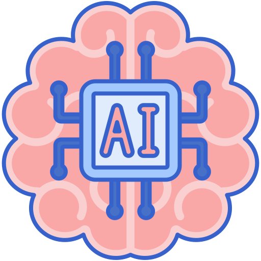
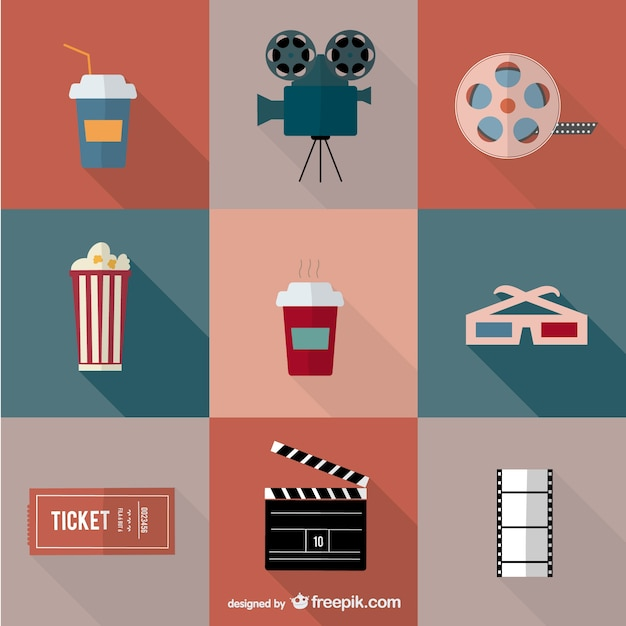
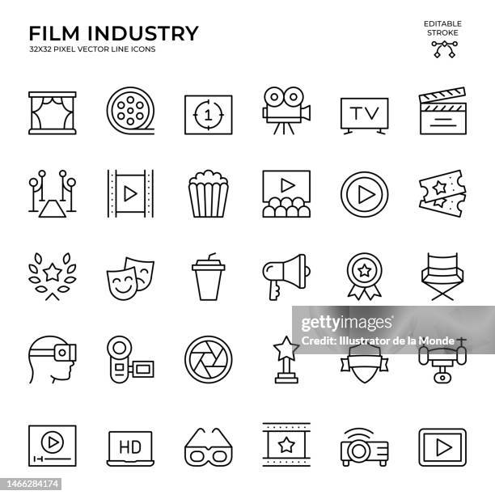
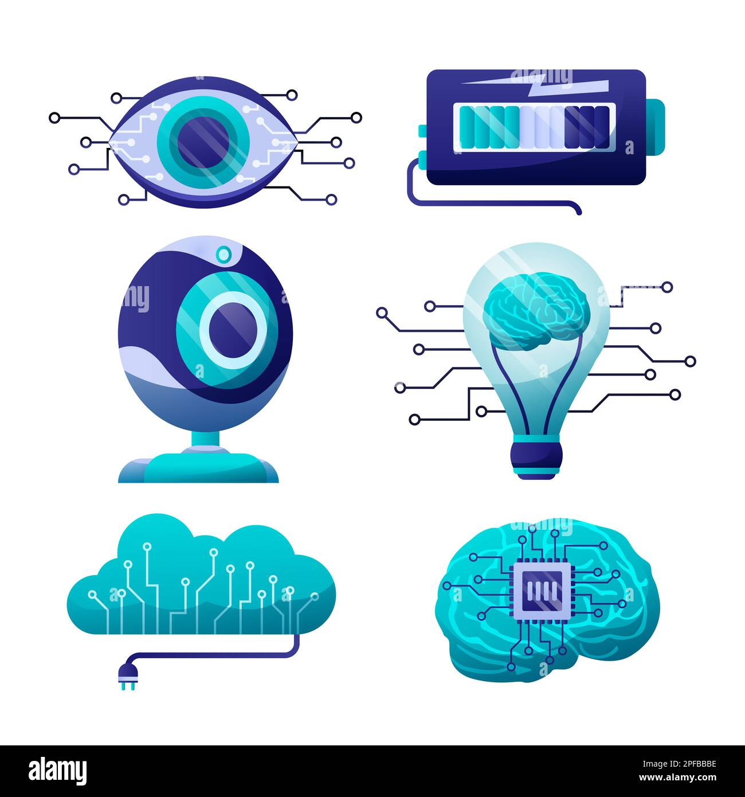

Min reise begynte med en MA Design fra Kunsthøgskolen i Oslo, inkludert et utvekslingsår ved Central Academy of Fine Arts i Beijing. Dette dannet grunnlaget for min lidenskap for å utforske skjæringspunktet mellom teknologi og kunst.
Kreativ Leder
TRY Dig
Ledet kreativ retning for digitale prosjekter, med fokus på innovative brukeropplevelser og AI-integrasjon.
Kreativ Leder
TRY Creative Tech
Ledet innovative teknologiprosjekter og utviklet interaktive installasjoner.
Motion Designer
TRY Motion
Utviklet 3D- og 2D-bevegelsesgrafikk sammen med Norges beste motion designere.
Digital Designer
TRY Apt
Fokuserte på digitale løsninger og brukeropplevelser.
Utstillingsdesigner
Expology
Grunnlag for senere interaktive installasjoner.